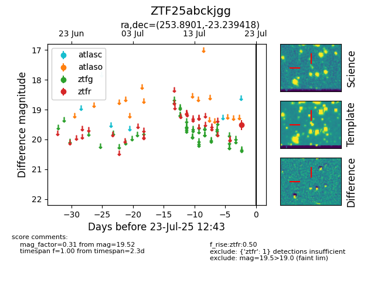

Target ZTF25abckjgg at 2025-07-23 12:43, see:
FINK: fink-portal.org/ZTF25abckjgg
Lasair: lasair-ztf.lsst.ac.uk/objects/ZTF25abckjgg
ALeRCE: alerce.online/object/ZTF25abckjgg
alt names
ZTF25abckjgg (ztf,fink)
coordinates:
equatorial (ra, dec) = (253.8901,-23.23942)
galactic (l, b) = (358.3547,+12.48386)
photometry
last ztfr=19.52
1 ztfr detections
